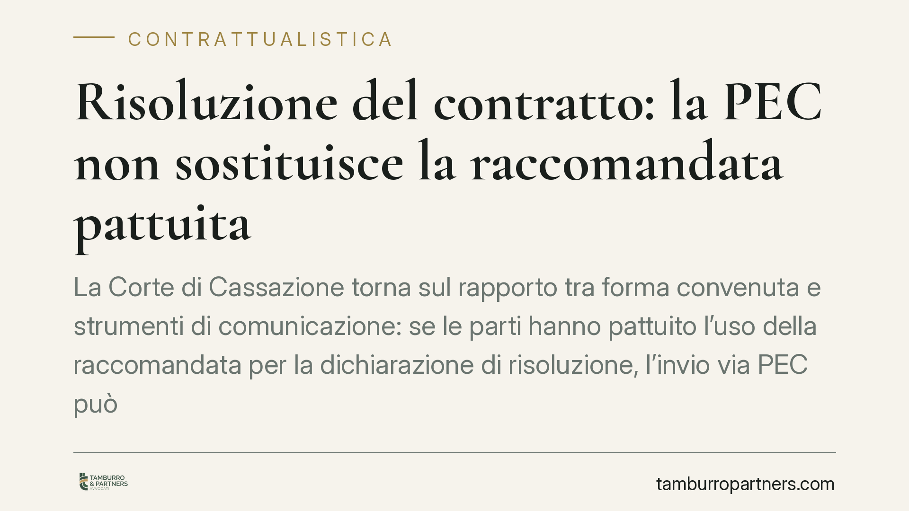

Risoluzione del contratto: la PEC non sostituisce la raccomandata pattuita
La Corte di Cassazione torna sul rapporto tra forma convenuta e strumenti di comunicazione: se le parti hanno pattuito l'uso della raccomandata per la dichiarazione di risoluzione, l'invio via PEC può risultare inefficace. Un principio che impone attenzione alla lettera delle clausole contrattuali e ai termini entro cui la risoluzione va esercitata.

Il caso
Le parti di un contratto avevano previsto una clausola secondo cui determinate comunicazioni — tra cui la dichiarazione di volersi avvalere della risoluzione — dovessero avvenire tramite lettera raccomandata. Una delle parti ha però comunicato la propria volontà di risolvere il rapporto utilizzando la posta elettronica certificata (PEC), ritenendola equivalente.
La questione sottoposta alla Cassazione è se la difformità tra lo strumento concordato (raccomandata) e quello effettivamente impiegato (PEC) incida sull'efficacia della dichiarazione. La Corte ha valorizzato la volontà delle parti come emerge dalla clausola, concludendo per l'inefficacia della comunicazione difforme.
> Nota sul riferimento. Il numero di ordinanza circolato nella divulgazione della pronuncia (n. 26272, con indicazione dell'anno 2026) risulta ad oggi non verificabile e cronologicamente incerto. In attesa di conferma degli estremi ufficiali, ci si limita al principio di diritto, senza fare affidamento sul riferimento numerico.
Inquadramento normativo
Occorre distinguere due piani che tendono a sovrapporsi.
Il primo è la forma del contratto: l'art. 1352 c.c. stabilisce che, se le parti convengono per iscritto la forma di un futuro contratto, questa si presume voluta a pena di nullità. È però una regola che riguarda la forma dell'atto negoziale, non quella delle successive comunicazioni tra le parti.
Il secondo piano — quello rilevante qui — è la forma convenzionale di una dichiarazione unilaterale (la comunicazione con cui si esercita la risoluzione). In questo caso il fondamento dell'inefficacia non è automaticamente la nullità ex art. 1352 c.c., che può al più operare in via analogica e come tale va richiamato. Il vincolo discende piuttosto dall'interpretazione della clausola secondo la comune intenzione delle parti (artt. 1362-1363 c.c.) e dalla forza vincolante del contratto tra le parti (art. 1372 c.c.): se le parti hanno scelto la raccomandata, quella scelta le obbliga.
Quanto all'equivalenza tra PEC e raccomandata, essa non è assoluta. La PEC produce effetti giuridici di attestazione dell'invio e della consegna ai sensi dell'art. 48 del Codice dell'amministrazione digitale (d.lgs. 82/2005): sul piano funzionale offre certezze analoghe alla raccomandata quanto a prova della trasmissione. Ciò, però, non la rende giuridicamente identica allo strumento nominato dalle parti. Se la clausola indica la raccomandata, l'equivalenza funzionale non basta a surrogare la modalità pattuita.
Implicazioni pratiche
La conseguenza più delicata riguarda i termini. Molte clausole risolutive — in particolare la diffida ad adempiere e la clausola risolutiva espressa — producono effetti solo a seguito di una dichiarazione tempestiva e formalmente corretta. Se la comunicazione è inefficace perché inviata con un canale difforme, l'effetto risolutivo può non prodursi, con il rischio che eventuali termini decadenziali maturino nel frattempo.
Il problema non è teorico: una PEC inviata entro i termini ma considerata inefficace equivale, sul piano pratico, a non aver comunicato nulla. La parte che credeva di aver risolto il contratto potrebbe trovarsi ancora vincolata.
La pronuncia conferma dunque un principio di cautela: nella contrattualistica la lettera delle clausole sulle comunicazioni va rispettata, e l'innovazione tecnologica non autorizza a ignorare le modalità concordate.
Cosa fare in concreto
- Verificare le clausole di comunicazione prima di inviare qualsiasi dichiarazione rilevante: raccomandata, PEC, forma scritta semplice non sono intercambiabili se il contratto ne impone una specifica.
- Rispettare la modalità pattuita anche quando ne esistano altre funzionalmente equivalenti: in caso di dubbio, è opportuno utilizzare lo strumento espressamente indicato.
- Aggiornare i modelli contrattuali prevedendo in modo esplicito la PEC come canale ammesso, se si intende poterla utilizzare in futuro.
- Monitorare i termini di esercizio della risoluzione, considerando che una comunicazione inefficace non sospende né interrompe eventuali decadenze.
- Conservare le ricevute di invio e consegna, qualunque sia lo strumento scelto, per documentare tempestività e ricezione.
Riflessione
La certezza tecnologica non coincide con la correttezza giuridica. La PEC è uno strumento affidabile e pienamente riconosciuto dall'ordinamento, ma la sua efficacia come surrogato di una forma pattuita dipende da ciò che le parti hanno scritto nel contratto. Prima ancora che un problema di tecnologia, è una questione di lettura attenta delle clausole.
Contributo informativo a cura di Tamburro & Partners - Avv. Giuseppe Tamburro. Non costituisce parere legale.
Ogni contratto ha il suo equilibrio.
Se vuoi una revisione delle clausole o una redazione su misura, scrivi allo studio. Ti rispondiamo entro un giorno lavorativo.